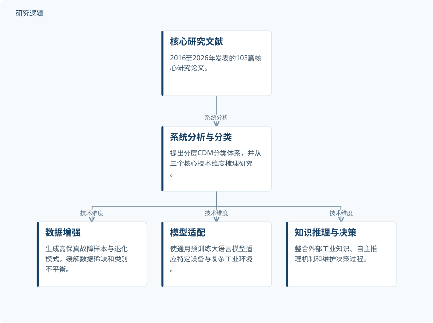

摘要解读
大语言模型驱动复杂工业过程预测性维护：综述与未来研究方向
Large Language Model-Driven Predictive Maintenance for Complex Industrial Processes: A Review and Future Research Directions
解读更新 2026-10-21 22:32 · 依据公开摘要整理，未核验全文细节
故障标注稀缺、跨工况泛化不足、因果推理能力有限，是复杂工业过程预测性维护面临的难题。这篇综述以分类框架梳理大语言模型的介入方式，阅读价值在于辨清不同技术解决什么问题，而非把应用潜力等同于已验证的维护收益。
文章目录
预测性维护的瓶颈不只是数据不足
预测性维护（PdM）是智能运维的重要支撑。摘要指出，传统机器学习方法在复杂工业过程中同时受到故障标注样本稀缺、跨工况泛化能力较弱和高级因果推理能力不足的制约。这些问题分别涉及数据供给、环境变化与故障解释，不能简单归结为模型规模不够大。
大语言模型与生成式人工智能为这些难题提供了新的切入点。不过，本文是一篇综述与展望，其核心是组织已有研究、讨论挑战，而不是报告某套维护系统已经全面克服上述限制。
以CDM框架组织预测性维护研究
作者系统分析了2016至2026年发表的103篇核心研究论文，并提出分层的“能力—领域—方法”（Capability-Domain-Method，CDM）分类体系，旨在为大语言模型用于工业过程预测性维护建立统一分析框架。
摘要明确列出数据增强、模型适配、知识推理与决策三个技术维度。它们构成综述梳理研究的主要视角，但摘要没有展开文献检索、筛选及分类实施细节，因此不能据此复述完整的综述流程。
依据摘要整理的综述分析结构


概括文献分析与三个技术维度的关系，不表示技术执行顺序，也不是论文原图。
下载 SVG图示关系说明
实线表示相邻阶段的信息流，虚线表示跨阶段联系或反馈。
核心研究文献 → 系统分析与分类：系统分析；系统分析与分类 → 数据增强：技术维度；系统分析与分类 → 模型适配：技术维度；系统分析与分类 → 知识推理与决策：技术维度
三类技术分别连接数据、设备与维护决策
在数据增强维度，综述归纳了生成高保真故障样本与退化模式的方法，其用途是缓解工业数据稀缺和类别不平衡；在模型适配维度，关注的是如何使通用预训练大语言模型适应特定设备与复杂工业环境。这里描述的是文献中的技术作用，并非本文给出的统一量化效果。
知识推理与决策维度则整合外部工业领域知识、自主推理机制和维护决策过程，面向故障诊断、根因分析与维护决策。作者同时讨论运行可靠性、深度领域适配、统一评价标准及部署效率等挑战，说明能力扩展与工程落地仍需分别审视。
摘要不足以判断实际维护收益
仅凭摘要，无法判断所纳入研究的设备样本规模、数据集构成、工况覆盖、比较基线，以及现场或跨设备验证范围。摘要也未提供可供统一比较的性能指标、收益幅度或部署成本；这不代表论文或被综述研究没有开展相关工作。
作者提出物理信息大模型、工业领域专用模型、自主维护智能体和标准化开放基准平台等未来方向。这些属于展望，不能理解为已经完成并验证的系统成果，更不能据此认定预测性维护已实现自主决策。
阅读启发：沿技术作用追问证据边界
阅读启发：后续阅读可沿三个维度分别追问——生成样本的高保真性如何评价，模型适配后的跨工况能力如何验证，知识推理如何连接到可核查的维护决策。这样更容易区分数据层面的改善、诊断层面的表现与最终维护收益，避免把它们视为同一件事。
以上为本站阅读启发与建议，不是论文已验证的结论。